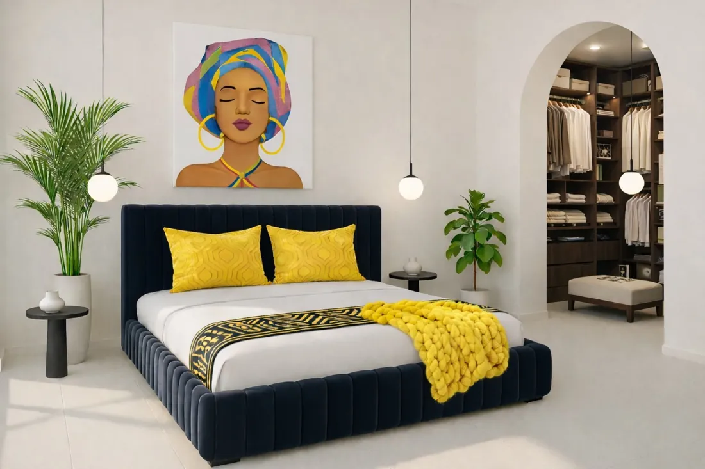

The name. The family. The vision.
A family name.
A world of meaning.
Kizmari was created by a mother and named after her children, Kizito and Mariam. What began as a family name is becoming a place, shaped by the same care that gave it meaning.
KizitoMariamKizmari
Our vision is luxury that feels like home. African-inspired patterns, art, and individual details help give these spaces a character of their own.
Meet the creative side of Kizmari